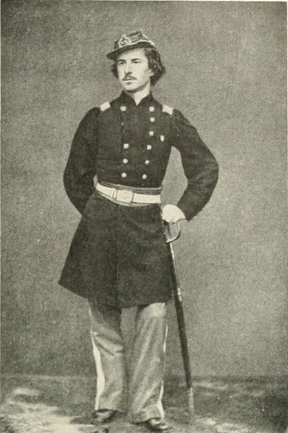
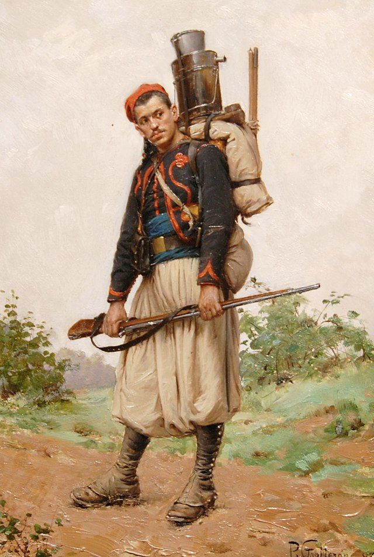
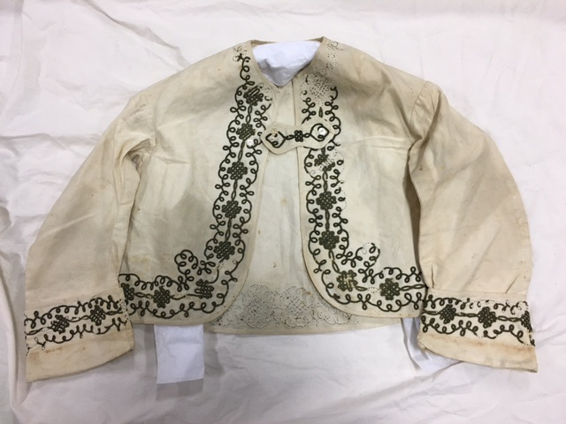
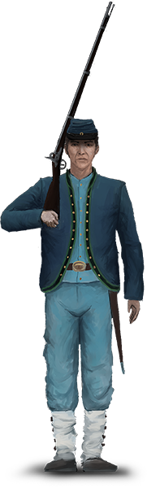

Baker’s Guard Zouaves
The Irish Skirmishers
What are they?
Baker’s Guard Zouaves were companies of Irish Zouaves as a part of the 69th Pennsylvania Volunteer Infantry Regiment. Specifically, they were companies I & K of the regiment, and functioned as flank companies and skirmishers for the regiment. However, this kind of functionality is quite standard for Zouaves of any nature during the civil war - so what makes these specific ones so special?
History of the Zouave
During the American Civil War, there was a definite craze for all things Zouave. Now, that can be hard to quantify, as there were many crazes of the time period - I mean half the country was trying to secede!
However, this didn’t originate in the United States. In fact, the word “zouave” is French - it is a derivative of the original “Zouaouas”, the Berber tribe from which the first unit was to be levied for French service. The first unit of Zouaves was raised in Algeria in 1831 by the French, and they were outfitted with the traditional north-African clothing, including open jackets, baggy trousers, a fez-like hat, etc.
Zouaves in the US
As the Zouaves gained fame in the French army during their conquest of Africa, they became renowned as an elite fighting corps. Word quickly spread, through observers and military officials alike - soon everyone was talking about the fearsome Zouaves.
This included Elmer E. Ellsworth, an enterprising individual who obtained a Zouave training manual from his friend, who was a surgeon in the French North-African Zouave units. He then formed a touring company, which performed light infantry drills all over the nation, drumming up even more interest in these “foreign” soldiers.

When the Civil War broke out, multiple units of Zouaves were formed, almost exclusively as militia units. Ellsworth’s own touring company became the 11th NY “Fire Zouaves”, on account of their red-trimmed uniforms.
Zouave uniforms were very similar to those of the French-Algerian troops: fez, baggy chasseur trousers, a shell jacket (which is open-fronted), jambieres (or gaiters), etc. These styles were often trimmed in red, both after the 11th NY and the original Zouaves - though they also had many swirls of embroidery as embellishments.

Fashion of the US during this time was also influenced by the famed Zouaves - tales of their exploits spread throughout the press, and many people wanted to dress like them as a result. Of course, men’s fashion was taken in with the designs, but more surprising was women’s fashion was as well. Many open-front Zouave-style jackets were worn as outerwear (as seen below), and the swirling, bold styles were also adopted into formal wear.

Baker’s Guard Zouaves
Baker’s Guard Zouaves were raised as two different companies before being attached to the 69th Pennsylvania Volunteer Infantry - I & K.
Company I was raised from two independent companies: “Gillen’s Independent Zouaves” and the “Philadelphia Zouave Cadets”.
Company K was raised from volunteers in Philadelphia by Cpt. William Davis, who was reported in the newspaper to be from the “gallant New York 69th”, another famed Irish regiment (from which the 69th Pennsylvania took it’s name).
The two regiments were named the “Baker’s Guard” Zouaves after Col. Edward D. Baker, who led the Philadelphia Brigade (of which the 69th Pennsylvania was assigned to).
These two companies, in the Zouave fashion, also had an extremely distinctive uniform. Similar to those of the 11th NY Fire Zouaves, and the 72nd and 95th Pennsylvania regiments of Zouaves, the Baker’s Guard Zouaves all wore the shortened shell jacket, vest, chasseur trousers, and jambieres; however, there were slight differences. As the rest of the units were trimmed in red, the Baker’s Guard uniforms were all trimmed in green, symbolic of their predominantly Irish heritage. Also, they opted to wear a kepi hat, also trimmed in green - rather than the traditional fez.

With such a different uniform, in the midst of war, one might assume they were only privately purchased - however, there are records of reissue:
This uniform was approved for reissue by the federal quartermasters in April of 1862, when Lieutenant Colonel George H. Crossman, Deputy Quartermaster at Philadelphia approved the manufacture of 160 uniforms “of the same pattern” which were known by the manufacturing firms of Rock & Wilson and Jacob Reed.
Battle Record
The Baker’s Guard Zouaves, and to a greater extent the entire 69th Pennsylvania Infantry regiment, saw tons of action throughout the Civil war. Along with the Army of the Potomac, they fought in every major engagement from 1862 through the end of the war. Possibly most notably, the 69th Pennsylvania was pivotal in repelling Picket’s charge on day 3 of the battle of Gettysburg.
On a personal note, when I reenact the Civil War, I do so as a Baker’s Guard Zouave. My normal company portrays the post-Gettysburg version of Company A of the same regiment.
If you are interested in finding more about the Baker Guard Zouaves, they were Company K of the 69th Pennsylvania Volunteer Infantry, 2nd Brigade, 2nd Division, 2nd Corps, Army of the Potomac.
-CH